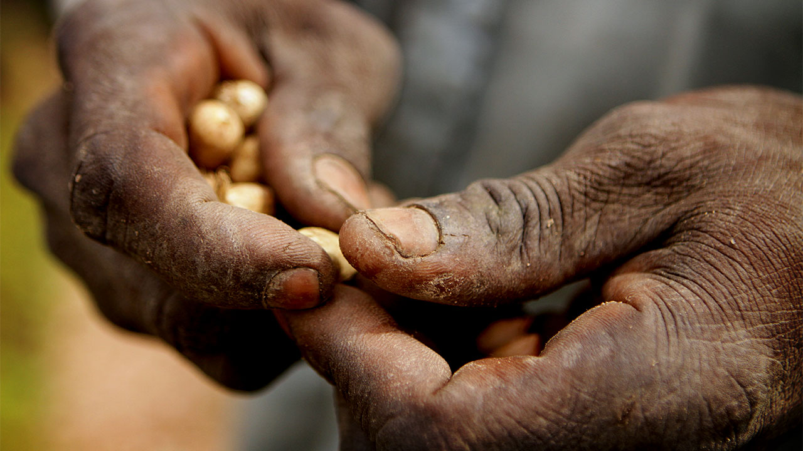
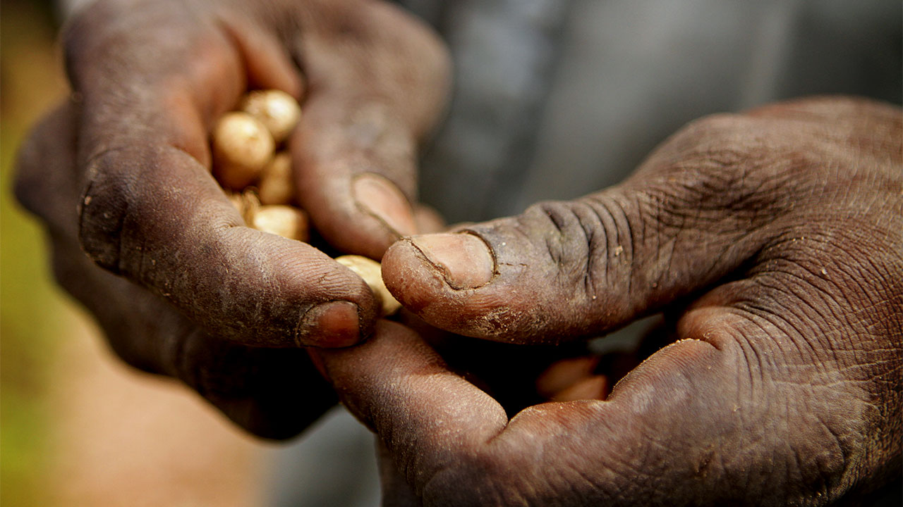

Poverty and hunger are two interconnected issues that continue to affect millions of people worldwide. Poverty is the lack of sufficient resources and income to meet basic needs, while hunger is the physical sensation of discomfort or weakness resulting from lack of food.
Poverty can lead to hunger because individuals and families living in poverty often struggle to afford nutritious food. They may have to make difficult choices between buying food and paying for other necessities such as housing, healthcare, and education. Additionally, poverty can also limit access to clean water and sanitation, leading to malnutrition and disease.
Hope
Hope is a powerful and positive emotion that helps people to stay optimistic and resilient in the face of challenges. It is the belief that good things can happen, and a sense of faith in a better future. Hope inspires people to take action and persevere, even when the odds are against them.
Save The Children
Saving the children is a critical mission that requires immediate attention and action. Every child deserves the right to grow up in a safe and nurturing environment, free from poverty, abuse, and neglect. It is our collective responsibility to ensure that children are protected, educated, and given the opportunity to reach their full potential. Together, we can make a difference and create a brighter future for all children.
Prosperity
Prosperity is more than just financial wealth; it encompasses a sense of happiness, fulfillment, and contentment in life. Achieving prosperity requires a balance between personal growth, financial stability, and contributing positively to society. With the right mindset, habits, and actions, anyone can attain prosperity and live a fulfilling life.